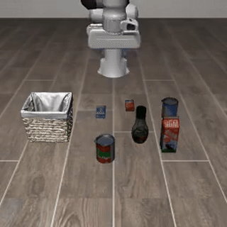
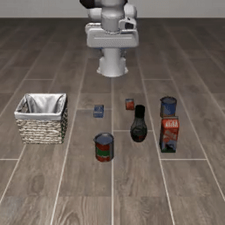
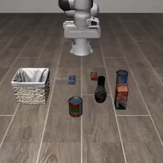

Flow-matching-based vision-language-action (VLA) models have emerged as powerful policies for robotic manipulation, yet a critical capability remains underexplored: fine-grained behavioral control, the ability to govern how a robot performs a task by intervening on its internal representations. Representation steering is a well-established interpretability tool for language and vision-language models, where behavioral features are typically encoded as linear directions, but we show that these classic methods fall short in VLAs. We propose DiMaS, a Distribution Matching Steering strategy tailored to flow-matching VLAs, which transports between representation distributions rather than shifting along a fixed direction, and show that it effectively controls behavior across two state-of-the-art VLAs.
Baseline vs. DiMaS-steered rollouts on the same task and seed.
Baseline (unsteered)

Steered (high → low)

The end-effector moves noticeably slower after steering.
Baseline (unsteered)
Steered (low → high)

The end-effector moves higher (larger |Δz| per step) after steering.
@misc{dimas2026,
title = {{DiMaS}: Distribution Matching for Steering Vision-Language-Action Models},
author = {Khayatan, Pegah and Meziane, Sara and Parekh, Jayneel and Cord, Matthieu},
year = {2026},
note = {TODO: venue / arXiv id once available},
}